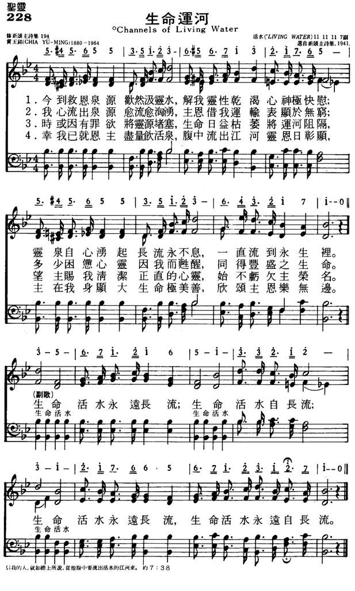
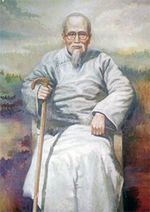

1309
228生命运河
賈玉銘
Channels Of
Living Water
[華]
|
|
228生命运河 |
|
|
1.今到救恩泉源欢然汲灵水，
解我灵性干渴心神极快慰；
灵泉自心涌起长流永不息，
一直流到永生里。
生命活水永远长流；生命活水自长流；
生命活水永远长流，生命活水永远自长流。
2.我心流出泉源愈流愈汹涌，
主恩借我运输表显于无穷；
多少困惫心灵因我而苏醒，
同得丰盛之生命。
生命活水永远长流；生命活水自长流；
生命活水永远长流，生命活水永远自长流。
3.时或因有罪欲将灵源堵塞，
生命日益枯萎将运河阻隔，
望主赐我清洁正直的心灵，
始不亏欠主荣名。
生命活水永远长流；生命活水自长流；
生命活水永远长流，生命活水永远自长流。
4.幸我已就恩主尽量饮活泉，
腹中流出江河灵恩日彰显，
主在我身显大生命极美善，
欣颂主恩乐无边。
生命活水永远长流；生命活水自长流；
生命活水永远长流，生命活水永远自长流。
|
https://www.mred365.cn/szxg/7231.html

|
|
|
|

LX1309
Channels Of
Living Water
228生命运河
[華]
生命運河
Channels of Living Water
今到救恩泉源歡然汲靈水，解我靈性乾渴心神極快慰；
靈泉自心湧起長流永不息，一直流到永生裡。
我心流出泉源愈流愈洶湧，主恩借我運輸表顯於無窮；
多少困憊心靈因我而甦醒，同得豐盛之生命。
時或因有罪欲將靈源堵塞，生命日益枯萎將運河阻隔；
望主賜我清潔正直的心靈，始不虧欠主榮名。
幸我已就恩主盡量飲活泉，腹中流出江河靈恩日彰顯；
主在我身顯大生命極美善，欣頌主恩樂無邊。
（副歌）
生命活水永遠長流，生命活水自長流；
生命活水永遠長流，生命活水永遠自長流。
中國信徒創作聖詩最多、最有力的作者，該是基督教靈修學院院長賈玉銘牧師。 賈玉銘（Chia Yu-Ming,1880-1964）牧師出生在山東省。
中學畢業時信主，繼入「文會館」就讀，畢業後開始傳道。

1927年，他搭船去溫州，那時正值南軍北伐，教會遭受逼害，教堂被燬，信徒離散，他寫下了第一首聖詩「我今渴慕聖靈充滿」（Holy
Spirit Fills My Heart），道出了他渴慕聖靈的心聲。 這些詩都編印在「靈交詩歌」及「聖徒心聲」中。
1930年在山東華北神學院教書時，每天寫一首聖詩。 抗戰時期他在內地創辦「靈修學院」，因院務繁忙，有一段時間無暇創作。
他一生總計寫了一千多首聖詩及許多其他著作。
賈牧師的聖詩多數以「聖靈充滿」為主題。 有好多首是由蘇佐揚牧師譜曲，諸如「奇妙揀選」（His
Election），「我今靜默主前」（Keep Silence Before Him），「主與我」（My
Lord and I），「主前靈修」（Spirituals Training）等。
賈牧師曾應基督徒學生團契之請，寫了一首「兄弟相愛」（Brotherly
Love），該詩敘述主內肢體以靈相通，以愛相繫的情誼，為許多聖詩集所採用。 教會在舉行聖餐時，也常唱此聖詩。 後人稱這首詩可與福賽特（John
Fawcett）的「教友聯合」（Blest Be the Tie That Binds）媲美。
寇世遠牧師（見七月廿四日）有一首「活水江河」(
Living Water)，調寄柏克（James H. Burke）的「耶穌不改變」（見九月廿六日）。
歌詞如下：
世界都喝雅各井水，越喝越乏味，角逐名利熱中富貴，金迷又紙醉，
生命短暫情慾難斷到頭皆虛幻，惟獨耶穌賜人活水湧流至永遠。
世界都喝雅各井水，越喝越沉睡，睡眼惺忪半開半閉，見利而忘義，
得過且過敷衍塞責人生是灰色，惟信耶穌活水滿溢腐朽化神奇。
世界都喝雅各井水，越喝越憔悴，行善不繼拒惡無力，空言復何益，
惟靠耶穌所賜活水奇妙能勝罪，生命改變能力彰顯道德可實踐。
（副歌）
永遠生命白白供應，得了便甦醒，
活水江河從主而得，喝了真快活，
活水的江河，活水的江河，
人若渴了，可以來喝，喝了永不渴。
中英文聖詩集參考
英文歌名 Channels
of Living Water
頌主新歌 228
頌主新歌(中英雙語) 227
讚美 168
讚美詩(新編) 58
http://www.hymncompanions.org/Sep/23/stream.php
http://pt.fuyinchina.com/m/view.php?aid=3845
贾玉铭（1897-1964）作词（1927年），
桑基（Ira D.Sankey，1840-1908）作曲
今到救恩泉源欢然汲灵水， 解我灵性干渴，心神极快慰。 灵泉自心涌起，永流永不息， 一直流到永生里。 生命活水永远长流，生命活水自长流；
生命活水永远长流，生命活水永远自长流。 我心流出泉源愈流而愈涌， 主恩藉我溢出，表显与无穷。 多少困疲心灵，因我而苏醒， 同得丰盛之生命。
时或因有私欲将灵泉杜塞， 生命日益枯萎，将河流阻隔。 望主赐我清洁、正直的心灵， 始不至亏欠主荣。 辛我已就恩主尽量饮活泉， 腹中流出江河，灵恩日彰显。
主在我身显大，生命极丰满， 称颂主恩乐无边。
贾玉铭字惺吾。山东人，是中国基督教福音派的著名神学家、神学教育家、解经家，出任过很多神学院、灵修院的教授跟院长。
1880年（清光绪六年），贾玉铭出生在中国山东省昌乐县小岭村。1901年，毕业于狄考文（Calvin Wilson
Mateer，1835-1920）博士在登州府创办的长老会文会馆（齐鲁大学前身），由于庚子事变的影响，那一年文会馆只毕业了两名学生，而其中之一其中之一是贾玉铭（德新）。然后他继续进教士馆（神学院），接受改革宗系统神学的训练。
贾玉铭从教士馆毕业以后，先后在美北长老会在山东省设立的安邱县逢旺支会、济宁州教会和沂州府教会担任牧师。1907年，赫士博士（Watson M.
Hayes，1857~1944）在山东潍县创办女子神学院。1915年在金陵神学院任教。1919年，赫士博士由于信仰原因，另外创办华北神学院，并于1922年迁往滕县。贾玉铭牧师被聘为教授。
20年代创办《灵光报》双月刊，
30年代在南京负责灵光报社工作。1930年任金陵女子神学院院长。1936年金陵神学院和金陵女子神学院合并，他辞去金陵女子神学院院长职，1936年10月，贾玉铭创立了中国基督教灵修学院。他在这里付出的心力最大，他写过很多作品，其中最著名的就是五卷《圣经要义》，此外，他主编《灵光报》。他是非常有名，影响很大的。
贾玉铭跟丁立美是长老会文会馆（后来的齐鲁大学）的同学，后来也一起同工很多年。丁立美是比较多灾多难学生当中组织了“学生立志布道团”当第一任的巡行干事，后来1919年到“云南布道会”去。贾玉铭比较多做教学方面的工作，是在1930年代有影响的基督教传道人。
抗战期间，中国基督教灵修学院几经转折迁至重庆。1945年迁回南京。1948年迁往上海至1956年停办前，他一直主持灵修学院工作。1948
年，他被推选为世界福音会议的副会长之一。1954年被选为中国基督教三自爱国运动委员会副主任。 主要著作有《神道学》
《宣道法》《教牧学》《灵修日课》和《圣经要义》(8卷) 等10多部。1964年4月病逝上海。
《生命活水》原名《生命运河》，写于1927年。他搭船去温州，那时正值北伐战争，教会遭受逼害，教堂被毁，信徒离散。 他根据《约翰福音》7:38
“信我的人…从他腹中要流出活水的江河来”以及《以赛亚书》12:3“你们必从救恩的泉源欢然取水”，有用这首诗道出了渴慕圣灵的心声。他说：“以活水喻灵恩，乃表明灵恩之丰富，可以涌流灌溉，将干枯不毛之地，成为乐土。
以河流喻灵恩，河流是有源头，流向低处，是永流不息，愈流愈涌，所经之处，百物滋生。
活水生命河流来自基督，使基督徒灵命得以增长。”他认为基督徒要有经验的信仰和对信仰的经验；要有丰盛的生和对生命的丰盛；要发现真理和对真理的发现。 贾
玉铭的圣诗许多都以“圣灵充满”为主题。 有好几首是由苏佐扬牧师谱曲，诸如
《奇妙拣选》（His Election），
《我今静默主前》（Keep Silence Before Him），
《我主与我》（My Lord and I），
《主前灵修》（Spirituals Training）及
《超世乐园》（A Garden Inclosed）等。
他曾应基督徒学生团契之请，写了一首
《兄弟相爱》（（《同蒙天召》），Brotherly Love，《颂赞圣诗》529首），
该诗叙述主内肢体以灵相通，以爱相系的情谊，为许多圣诗集采用，后来教会在举行圣餐时，也常唱此圣诗，后人称这首诗可与福赛特的《教友联合》（Blest Be the
Tie That Binds）媲美。
《颂赞诗歌》118首《主行新事》
也是贾玉铭牧师作词的。贾牧师一生总计写了一千多首圣诗及许多其它著作，都编印在《灵交诗歌》，《得胜诗歌》及《圣徒心声》中。
曲作者桑基生于美国宾夕法尼亚州，自幼参加教会活动。17岁时，他的父亲说：“我看这孩子将来除了每天在腋下夹着一本赞美诗到处歌唱之外，不会找别的工作。”的确，他经常在教会的主日学中教唱赞美诗，后来果然成为一位世界著名的福音圣诗歌唱家。他曾担任宾夕法尼亚州青年会的总干事。为建造青年会会址，他募集了4万美元。后来他与慕迪（Moody）同工，在布道会上教唱福音诗歌，也曾编辑并创作过许多首赞美诗。他曾经将他的作品编辑好，准备出版，但一次失火将他的原稿烧毁。
1906年他眼睛失明后，还出版了一本《我的生平及福音赞美诗的故事》。在书中说：“我不是一个音乐家，也不是一个歌唱家，我从来没有学过声乐，也没有受过艺术教育，但我对所唱诗歌的每一句和每一字都深有体验。我每唱一首诗都必须把它唱到每一个听众的心里。。我常感到好的旋律易找，但好的歌词却不易找。”
桑基一生创作了几十首福音赞美诗，其中三十首至今仍在教会的聚会中传唱。
《颂赞诗歌》172首《主寻亡羊》，
236首《天乡之歌》，
490首《靠主得胜》，
527首《蒙主保佑》，
569首《一生一世靠主》，
571首《隐藏于耶稣》，
《赞美诗》（506版）第331首《我有一救主》也是桑基作曲的。
生命运河
Channels of Living Water
Chia Yu-Ming, 1880-1964
信我的人，就如经上所说，从他腹中要流出活水的江河来。（约 7:38）
耶稣升天后，圣灵在五旬节降临，继续耶稣在救恩方面的工作。祂不断感动人，希望人们肯接受耶稣为救主。直到如今，仍然使人自责、悔改，然后蒙恩。
圣灵不只是叫人明白真理，乃是要进入真理。明白只在外面，进入乃在里面。圣灵还有一项任务 － 要荣耀耶稣（约 16:14）。天父也要荣耀祂的儿子（约
17:1）。圣灵一直与我们同在，并且在我们相信耶稣的那一剎那已进入我们心中（约
14:17），帮助我们在生活上结果子，赐我们工作与得胜罪恶的力量，将来还要改变我们、提我们到空中去见主。[dropdown_box expand_text=”全文” show_more=”显示” show_less=”隐藏”
start=”hide”]「生命运河」一诗之作者为贾玉铭。中国信徒创作圣诗最多，最有力量的，要算是他了。所写之诗歌近一千首，有一部份已由苏佐扬牧师加以配曲。其诗歌曾编印成「灵交诗歌」与「圣徒心声」。贾牧师说，1930
年在山东滕县华北神学院执教时，每天必写一首。
贾牧师关于「圣灵充满」为主题的圣诗，写得最多。促成之原因乃在 1927
年那时南军北伐，教会遭受逼迫，教堂被毁，信徒离散，在此情景中，作者道出渴慕圣灵充满的歌声。本诗即其中一首。
1 今到救恩泉源欢然汲灵水，解我灵性干渴心神极快慰；
灵泉自心涌起长流永不息，一直流到永生里。
2 我心流出泉源愈流愈汹涌，主恩借我运输表显于无穷；
多少困惫心灵因我而苏醒，同得丰盛之生命。
3 时或因有罪欲将灵泉堵塞，生命日益枯萎将运河阻隔，
望主赐我清洁正直的心灵，始不亏欠主荣名。
4 幸我已就恩主尽量饮活泉，腹中流出江河灵恩日彰显，
主在我身显大生命极美善，欣颂主恩乐无边。
（副歌）
生命活水永远长流；生命活水自长流；
生命活水永远长流，生命活水永远自长流。
＊生命的意义在于以上帝为中心，一个神圣的「核心」而活。 ── 汤玛士凯利
https://www.xueshengshi.com/?p=1861
-
賈玉銘
編輯
字德新，號惺吾，山東安丘縣人，是中國基督教福音派的著名神學家、神學教育家、解經家，出任過很多神學院、靈脩院的教授跟院長，是唯一在國際上被稱為“神學泰斗”的中國基督教神學界人士。
-
中文名
-
賈玉銘
-
別 名
-
德新
-
國 籍
-
中國
-
民 族
-
漢族
-
出生日期
-
1880年
-
逝世日期
-
1964年
-
主要成就
-
唯一在國際上被譽為“神學泰斗”
的中國基督教神學界人士
-
出生地
-
山東安丘
-
信 仰
-
基督教
-
代表作品
-
《聖經要義》《基督聖蹟》《路得記》《小先知要義》
-
性 別
-
男
1879年1月19日，賈玉銘出生在中國山東省
昌樂縣小嶺村。年少時歸信基督。1904年，畢業於美國長老會宣教士
狄考文（Calvin
Wilson Mateer，1835-1920）博士在登州府（今蓬萊）所創辦的長老會文會館（齊魯大學前身），學習非常岀色，由於
庚子事變的影響，那一年文會館只畢業了兩名學生，而其中之一是賈玉銘（德新）。在學期間，賈玉銘與丁立美弟兄結為主內知己，共同決志終生獻身傳道。後來丁立美成為中國教會的著名佈道家，他們曾同心同工多年，無論在一起，還是在各自的事奉工場上，二人都有非常美好的見證，對中國教會貢獻卓著。然後他繼續進教士館（神學院），接受改革宗系統神學的訓練。
 《聖經要義》
《聖經要義》
賈玉銘從教士館畢業以後，先後在
美北長老會在山東省設立的安邱縣逢旺支會、濟寧州教會和
沂州府教會擔任
牧師。1907年，赫士博士（Watson
M
. Hayes，1857-1944）在山東濰縣創辦女子神學院。1915年在金陵神學院任教。1919年，赫士博士由於信仰原因，另外創辦華北神學院，並於1922年遷往滕縣。賈玉銘牧師被聘為教授。
20年代創辦《靈光報》雙月刊，30年代在南京負責靈光報社工作。1930年任金陵女子神學院院長。1936年金陵神學院和金陵女子神學院合併，他辭去金陵女子神學院院長職，1936年10月，賈玉銘在南京戴厚巷創立了中國基督教靈脩學院。其章程開宗明義："學校聖工，仰望主；不募捐，不借債，過信心的生活"。旨在培養全心奉獻，靠信心生活的傳道人。他在這�堨I出的心力最大，他寫過很多作品，其中最著名的就是五卷《聖經要義》，此外，他主編《靈光報》。他是非常有名，影響很大的。
 《聖經要義》
《聖經要義》
賈玉銘跟
丁立美是長老會文會館（後來的齊魯大學）的同學，後來也一起同工很多年。丁立美是比較多災多難學生當中組織了“學生立志佈道團”當第一任的巡行幹事，後來1919年到“雲南佈道會”去。賈玉銘比較多做教學方面的工作，是在1930年代有影響的基督教傳道人。
抗戰爆發，南京陷落。賈玉銘的靈脩院被迫遷往大西南，先到四川灌縣，再成都，最後落定在重慶南岸的一座小山上，此山有許多洞穴，是禱告、靈脩的好地方。許多人慕賈玉銘之名而來，進入靈脩院接受造就。1945年抗戰勝利後，靈脩院遷回南京。1949年又遷移到上海陜西路，一直到1956年被關閉為止，前後歷二十年之久，為各地培訓岀許多教會工人。賈
牧師曾任中國基督教長老總會會長。
1948年，賈玉銘應邀參加在荷蘭舉行的世界福音會議，並當選為副主席，足見他當時在國際上亦有相當的影響與威望。回國途經新加坡時，中國國共之間內戰正酣。當時在新加坡有許多牧長和他先前的學生，勸他不要回國，留在南洋。但他割捨不得在上海的靈脩院，而且他認為中國大陸的教會更需要他。因此他婉拒了大家的好意，毅然回到上海靈脩院繼續他的工作，面對未來的挑戰，培養造就眾信徒。
1949年，70高齡的賈玉銘除繼續主持靈脩院工作外，於同年暑期，應邀到廣西桂林、陜西西安和三原、北京、天津等地主領培靈會和佈道奮興會等，給各地教會帶來很大的復興。尤其在北京，聚會人數常達仟人以上。
五十年代初，教會生活尚未受到衝擊，賈玉銘照常主持靈脩院、從事講道與寫作等。但自1950年9月，"三自革新運動"發起後，緊接着就是"簽名運動"、"抗美援朝運動"、"控訴運動"等政治運動，一浪高過一浪。1954年8月，中國基督教第一次全國會議在北京舉行。中國基督教三自愛國運動委員會"成立，吳耀宗任主席。出於"團結"福音派考慮，德高望重的賈玉銘被安排為六位副主席之一。賈
牧師被選為
三自愛國運動委員會六位副主席之一。
此後，賈玉銘能夠做的事情越來越有限，亦越少在公開場合露面。儘管他年事已高，仍難免受到一定的批判和衝擊。再後來，他漸漸淡岀中國的教會圈。
 賈玉銘
賈玉銘
主要著作有《神道學》（上、中、下）、《基督聖蹟》、《完全救法》、《路得記》、《小先知要義》、《52靈程》、《使徒傳道模範》、《約翰福音講義》、《宣道法》、《教牧學》、《靈脩日課》和《聖經要義》（8卷）
等10多部。曾編著出版《靈交得勝詩歌》、《聖徒心聲》等四本讚美詩，其中絕大多數歌詞都出自他的手筆。
賈
牧師因病於1964年4月12日在上海離世，安息主懷，享年84歲。
https://baike.baidu.hk/item/%E8%B3%88%E7%8E%89%E9%8A%98/7123706
https://bdcconline.net/zh-hant/stories/jia-yuming
拙口
一九五四年春，上海靈修院來了幾位政府搞宗教工作的“幹部”，和賈牧師會談了數小時。很明顯，這種會談不可能談真理上的該與不該，只能交易式的談條件，向賈牧師“曉以利害”。擺在賈老牧師面前的兩個選擇：參加“三自會”，則靈修院照常辦下去，而且當時賈老牧師手頭寫好了大量要出版的全套解經著述文稿，都可以如期出版問世；否則，靈修院關門，出版書籍，一本也不可能。
我們無法知道賈牧師當時的思想與心靈是怎樣掙扎的，只知道最後的結果，他作出了違背自己曾以真理原則教導別人的決定——參加了“三自會”。立刻，“三自會”全國副主席的名單�堙A列上了賈玉銘牧師的名字。這是“三自會”的一個重大勝利，終於將這位頗具國內外影響力的“神學界泰斗”，拉了進去。
但是，賈玉銘牧師付出的代價是什麼呢？
一、 靈修院的分裂和變質
據當時在靈修院受造就的肢體，親身感受說，賈老牧師參加“三自會”，是靈修院非常明顯的一個轉折。那種“靈風吹煦，靈雨滋潤”的氣氛，一掃而光，同工之間，同學之間，完全被那種政治鬥爭的恐懼氣氛所籠罩。恩膏止住了，聖靈能力離去了，代之另一個靈——一種陰森的權勢侵襲而來。辯論會——即鬥爭會，代替了禱告會。在一次有黨政幹部參加的，批鬥“反三自”勢力的會上，力主參加“三自會”的領頭人王XX，逼著賈老牧師當眾表態，把被批鬥的反三自會同學楊XX開除靈修院，老牧師左右為難，說不出話來，最後只是重重地“唉——”了一聲，拂袖離去。於是，這位主持會議的王XX下結論說：“老牧師被楊XX氣得這個樣子！”這位楊弟兄終於被開除，且無家可歸，沒有幾天就被捕入獄了。老牧師的主要同工，以及鍾愛的學生，也都離開了靈修院，有的並相繼被捕入獄。賈玉銘牧師完全落在“三自會”的控制之下。
有一位肢體暗暗去問賈玉銘：“老牧師，你本來在講臺上告訴我們，參加‘三自會’是違背 神旨意的；你為什麼現在自己參加？”
賈玉銘的回答是他當時只為了靈修院能繼續辦下去，他的書可以繼續出版，沒有想到會這樣發展下去，現在不能自拔了。
二、 諾言的幻滅
賈玉銘就任了三自會全國副主席的職位以後，隨著靈力的離去，同工的離去，靈修院在
神的眼中已經失去存在的價值，在三自會的戰略部署上，也不復需要保留了。於是不久，就被迫結束，合併到南京金陵協和神學院去了，而這個協和神學院是幹什麼的，它自己的歷史記錄已清楚地說明了。從此，神託付給賈玉銘牧師的上海靈修院，不但沒有繼續辦下去，而且徹底壽終了。另外，全套解經著述文稿，本已由“基督徒佈道會文字部”出版了一部分，其餘擬儘快出全，但賈玉銘卻要回文稿，交給另一參加三自會的出版社，可惜這些文稿石沉大海不知去向了。
此時，他才意識到，名列全國三自會副主席之前，所得到的一切諾言，完全幻滅了。
五五年肅反，在全國教會中，徹底逮捕和清除了以王明道為代表的反三自會勢力之後，基督教�堛磾惜W成了一言堂，公開的反三自會勢力，被徹底摧垮。因此，過去用以壯其門面，藉以分化對立的某些“名人”，也沒有多大利用價值了。於是，這位還掛著“全國三自會副主席”頭銜的賈玉銘，竟被打成右派，站到被告席上去了。因為當初“三顧賈府”請你出來，是要利用你的名，而非要你這個人，更非要你的工作。實際來說，任何真正屬神的人和工作，都早已被列到他們的被告席上了。
被騙——悔之——晚矣，這就是賈玉銘牧師末後一段路的真實寫照。
如果當初賈牧師按主給他的啟示，持守真理原則，拒絕參加三自會，又會怎麼樣呢？也不過是靈修院關門，書不能出，上臺挨鬥，頂多加上被捕坐牢，和王明道一樣，與千萬個這樣的肢體同受苦害，卻守住至高神僕人的貞操。如今，喪失真理原則，做了妥協，結果想保的，什麼也沒有保留得住，想避免的，什麼也沒有避免得了。最嚴重地是失掉了
神的見證、教會的見證、神僕人的見證，成為逼迫殘害主教會之人的工具，對自己個人來說，真是功虧一簣，晚節失貞了！
三、 靈力喪失，一蹶不起
賈玉銘牧師末後的光景，實在令人歎息驚異。在他一生的靈命生活和事奉工作上，堪稱同心同行的賢內助賈師母，早已離世安息了。
同工的離去，愛徒的相繼被捕，更可怕的是由於走錯路而靈力喪失，失掉真正的屬靈工作，他�堨~感到的孤單和痛苦，也是我們難以想像的。好像一個受了重傷的人，仆倒在地，昏昏然爬不起來。這絕非筆者的主觀臆斷，在那個時期，接觸賈老牧師的人，都可以作見證，甚至當時控制他的三自會一派的人，也不能否認，賈老牧師是一蹶不振了。
有一天，賈老牧師暗地找到他從前的一位學生，請求為他禱告。這位學生說：
“老牧師，你自己禱告呀！”
老牧師回答：“我不會禱告了。”
學生驚問：“老牧師，你從前都教我們禱告，怎麼你現在不會禱告了呢？”
答：“ 神不聽我禱告了！”說完竟失聲痛哭。
到底是什麼阻隔了
神垂聽祂僕人的禱告呢？聖經中的答案太多了，只舉一例：
神藉先知耶利米說：“他們必向我哀求，我卻不聽。”為什麼 神不聽哀求？因為“在猶太人和耶路撒冷居民中，有同謀背叛的事。他們轉去效法他們的先祖，不肯聽我的話……背了我與他們列祖所立的約。”（耶利米書十一章9~10節）
扭轉這種禱告不蒙垂聽的光景，只有扭轉自己的腳步，這是所有經歷過屬靈規律的人所能見證的。
深明屬靈規律的賈老牧師，完全清楚自己問題的癥結所在，所以他曾通過和緩央求的方式，要求退出“三自會”，但，“上賊船容易，下賊船難。”他的要求當然被拒絕了，除非自己決心付出比當初不參加更大的代價。但這對一個已經�堨~受傷的人來說，談何容易！
賈玉銘老牧師末後的這種喪失靈力，一蹶不起的光景，使多少愛主也愛他的肢體痛惜、憂傷，但在那種情況下，也只能在禱告中等待他調轉腳步，�堶悸熄侘玩o醫治，靈力恢復，在新形勢下，為主再打美好的仗！但是，直到一九六四年夏，他悲悲慘慘地離開世界，沒有聽見他有什麼變化。
哀哉！中國教會的一代屬靈巨人，中國神學界的泰斗賈玉銘牧師，竟是這樣淒慘的退出沙場，筆者書寫至此，真是噙淚執筆，幾次伏案失聲——大英雄何竟如此仆倒！
悲愴之餘，不能不清醒頭腦。綜觀賈牧師一生，何竟如此結局？有它的外在因素和內在因素。
外在因素是抵擋
神、逼迫教會的社會條件，和教會�堮笆D路線對所有忠心事主之人的衝擊。這正是中國教會所面臨的共同外因。當我們看到“三自會”及其吹捧者，抬出他們的副主席賈玉銘，招搖過市的時候，令我們想到的，不是這個招牌證明“三自會”這個組織取得神學上、真理上的支持，也不是能使這個組織從這位有崇高聲望的名人，撈取一絲屬靈的印證，相反，這個招牌正是一個極好的反證：以賈玉銘的現身說法表明，“三自會”這個組織是一個怎樣毀壞
神所重用的僕人，是一個怎樣沾染不得的組織。其實，這一點，“三自會”的當權者自己是最清楚不過的，它只能蒙蔽一些國外不明真情的人們。賈玉銘牧師在參加“三自會”這一步上，成了他晚年一個慘痛的轉折。所謂“一失足成千古恨”，這是何等明顯的事實，也是一個
神僕人的悲劇！
這個悲劇的內在因素，給所有服事主的人，特別是被
神重用的人，一個極其深刻、極其重要的教訓。
賈牧師受騙是因為他的神學知識不夠嗎？屬靈程度不高嗎？還是他求問 神， 神沒有給他指示呢？這些都不是。使他作出妥協的具體條件是：靈修院要繼續辦下去，還是關門？全套聖經解經文稿，要出版問世，還是付諸東流？這是一個掙扎。靈修院培養人才解經書供應信徒。這些不但是個人多年的心血，豈不也是主的工作嗎？個人得失為小，主的工作為重。為維護工作而委屈自己，這真是難能可貴，無可厚非的選擇。
是的，在從事社會上的某項事奉，這是一個高尚的原則。但是，許多屬世的高尚原則，拿到
神的聖工上，卻是不適用的，甚至會是極其錯誤和有害的。當以色列人趕著牛車，拉約櫃時，牛失前蹄，車要翻，約櫃要倒，烏撒用手扶住約櫃，這本是好意，但被神當場擊殺，死在車前。這給我們一個鮮明的教訓：
神不要、甚至憎惡用違背 神旨意的手段，去維護一個錯誤的工作。我們必須無條件的接受 神所吩咐的：祭司杠抬約櫃的辦法，棄絕用牛車拉約櫃的人的手段。 神絕對不允許我們用違背真理的方法，去維護祂的工作。工作的主是 神，我們只能作順命的奴僕，只有按真理而行的義務，沒有自作主張的權利。
在這彎曲悖謬的世代，教會中，背道路線呼風喚雨，真如同吼叫的獅子遍地遊行，尋找可吞吃的人。這時，對 神的僕人來說，最重要的品質，就是忠心。忠於工作的主。工作和主，我們到底愛哪個？愛工作過於愛工作的主，導致可悲的結局。這是賈玉銘牧師給我們的深刻教訓。背離主的工作是社會事業，不是教會聖工。愛工作過於愛工作的主，實質上是愛自己、愛名利的變態表現，因為工作是人經營的，視主工為個人的私營事業了，實際上，必然落於竊奪主的榮耀而不覺。
神的道永遠長存，主的教會永遠立於不敗之地，不等於有形的靈修院一定要繼續辦下去，書一定要出版問世。 神若看為需要，祂必保守，僕人只有忠心。
賈老牧師有了妥協的內在因素，所以外在因素才能在他身上發生作用。這是一個慘痛的教訓！
賈老牧師雖已過去，但他的一生的成功和末後的失敗，都會成為教會的寶貴教訓。並且有何等寶貴的現實意義。筆者深信，我們本著謙卑受教的心，這樣實事求是，從這些屬靈前輩，吸取正反兩方面的經驗和教訓，必會比單方面地“隱惡揚善，歌功頌德”獲益更多，更合 神心意。
此篇拙文，似乎對已過去的主仆有所評價，但如果單為了評價一個人物，無論評得怎樣正確，我寧願緘口，今日自己受戒，明日見主坦然。但是，耳聞目睹，那些法老的術士們，歪曲歷史，謬解真道，以假亂真，以賈玉銘牧師為招牌，替自己的背道行徑尋找藉口，粉飾裝潢。對內繼續毀壞教會、苦害肢體；對外迷惑和蒙蔽一些不明真相的人，是可忍孰不可忍？每念及此，我就覺得“似乎有燒著的火，閉塞在我骨中，我就含忍不住，不能自禁。”我也深以為是出於主的感動了，求主憐憫！
chrome-extension://efaidnbmnnnibpcajpcglclefindmkaj/viewer.html?pdfurl=http%3A%2F%2Fwww.jmiinnerlife.org%2Fupload%2FMusicJMI%2FLyric3%2F171%25E6%2588%2591%25E4%25B8%258D%25E9%2581%258E%25E6%2598%25AF%25E7%25A5%25A2%25E9%2581%258B%25E6%25B2%25B3.pdf&clen=1553725&chunk=true